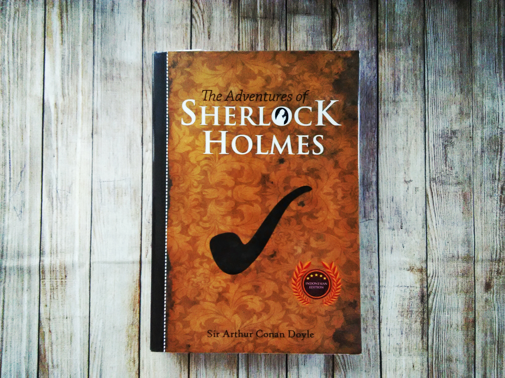
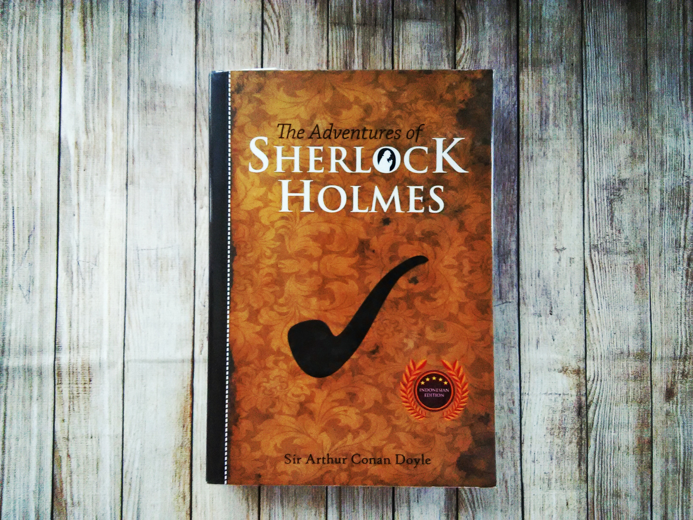

My hobbies
First of all I want to say that I have not a lot of hobbies. I Mostly prefer sports. However, to sit for a couple of hours at the computer or at the book studying something new I really like.
Reading
 

I read a little, but I love to do it. Read about 8-13 books a year. All these books of different genres. Mostly read novels, books on programming, sometimes detectives, or adventure books. The biggest and most interesting works I've read:"War and Peace","Wuthering Heights","The Adventures of Sherlock Holmes" and many others.
Photography
I love photography. Photography is a true art which is not so easy to master. In fact, it is not just an art but a whole science. I like learning new things about photography equipment, exposure, colours and lighting. I read blogs of famous photographers and try to follow their advice. There are a lot of genres in photography. I like to take pictures of nature and people. Still nature comes alive in a photograph. People, on the contrary, become motionless only in the picture and let the photographer perpetuate the moment of their life. I love portraits. I have taken full-length and half-length portraits as well as family and group portraits. Why do I like photography? No pictures are the same. You can take pictures of the same person or place and every time discover something new. My friends often ask me to take pictures of them. That means they see me as a professional. And I always try to make them happy. Photography teaches us to notice beauty in simple things. We all are used to living at a fast pace. And only with the camera in our hands we are able to slow down and see unusual in everyday things.